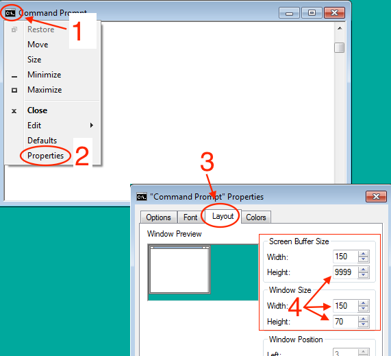

| $Id: install-guide-windows.html 6309 2019-07-28 22:01:05Z JohnHenning $ | Latest: www.spec.org/cpu2017/Docs/ |
|---|
Contents
Prepare for the installation
1. Review Prerequisites
2. Open a Command Prompt Window
3. Verify the download (optional, recommended)
4. Mount the ISO image
Install it
5. Run install.bat
5.a. Confirm Source and Destination
5.b. The files are unpacked and tested
6. Edit shrc.bat
Test your installed copy
7. Use your shrc.bat
8. Select a config file and try to build one benchmark
9. Try compiling an entire suite, and run the test workload
10. Try a full (reportable) run
Appendix 1: Uninstalling SPEC CPU 2017
Appendix 2: Useful Tips and Techniques
a. About Temporary Space (%temp%)
b. About Text Files and Windows/Unix Compatibility
This document describes how to install SPEC CPU®2017 on Microsoft Windows systems. (If you want to install under AIX, Linux, mac OS, Solaris, or a similar system, you need the other install guide.) SPEC CPU 2017 is a product of the SPEC® non-profit corporation (about SPEC).
Reminder: SPEC benchmarks are licensed software.
Please follow these steps:
1. Review PrerequisitesReview the System Requirements. Please particularly notice the requirements for:
2. Open a Command Prompt WindowIf you haven't already done so, start a Command Prompt Window now.
Tip: you will probably find that the window is easier to use if you enlarge it.
|
 |
SPEC CPU is distributed as an ISO image. The file is large; therefore it is recommended (though not required) that you verify that the download is correct before continuing.
If you have the sha512sum or sha256sum utility, use it to calculate a checksum for your download. You might be able to access the utility by right-clicking on the ISO image. Compare the checksum to the posted value at www.spec.org/cpu2017/releases.
| q. | Is it ok to skip doing this verification? I trust my network and I don't feel like hunting for a SHA-512 tool just now. |
| a. |
It's always safer to verify downloads.
However, if you skip this step, you will probably be ok, because the installation procedure will verify the individual files within the distribution. |
There are two options:
Or, Burn a DVD
(optical device and blank DVD are required)
Windows 7 and later has built-in software to burn a DVD. Right click on the ISO image and select "Burn disk image".
(Older versions of Windows are not supported by SPEC CPU 2017.)
Regardless of the method you choose, note the drive letter where the ISO image or the DVD is attached.
The following tasks must be done from the Command Prompt. Do not attempt to run install.bat from Windows Explorer.
Change your directory to the mounted image. The following examples assume that the ISO image is mounted as drive D:, so entering just the letter and a colon changes to the right location:
C:\> D: D:\>
You're now ready to run the installer. The format for this command is
install.bat destination_drive:\destination_directory
For example, if your ISO image is drive D:, and you want to install CPU 2017 on drive C: in a folder named cpu2017, you could type:
D:\> install.bat C:\cpu2017
You should see a message similar to the following:
D:\>install.bat c:\cpu2017 Installing FROM source: E:\ Installing TO destination: c:\CPU2017 If the above is NOT correct, hit Control-C and run install.bat from the correct benchmark tree with an argument designating the desired destination directory. Press any key to continue . . .
If you see a message similar to the above, just press return. If you see error messages, check to be sure that you are in the correct directory and that %temp% is defined.
After you press return, the installation begins.
No more questions are asked. As it proceeds, the install procedure tells you what benchmarks are being unpacked.
Depending on the speed of the source and destination devices, this
may take several minutes.
Please be patient.
Unpacking CPU2017 base files (17.4 MB)
Unpacking 500.perlbench_r benchmark and data files (102.1 MB)
Unpacking 502.gcc_r benchmark and data files (256.3 MB)
Unpacking 503.bwaves_r benchmark and data files (0.2 MB)
.
. (lines omitted)
.
Unpacking 999.specrand_ir benchmark and data files (6.4 MB)
Checking the integrity of your source tree...
Depending on the amount of memory in the system and the speed of
the destination device, this may take several minutes.
Please be patient.
Unpacking tools binaries
Setting SPEC environment variable to c:\CPU2017\
Checking the integrity of your binary tools...
Testing the tools installation (this may take a minute)
Runspec tests completed successfully!
Installation completed!
c:\cpu2017>
Note that the testing phase (just above) may take more time than it does to do the unpacking. This is normal.
At this point, the CPU 2017 installation will be using about 2.2 GB of disk space on the destination drive.
Change your directory to the destination that has just been created, for example:
D:\> C: C:\> cd cpu2017 C:\cpu2017\>
Read the comments in the file
shrc.bat
and make the appropriate edits for your compiler paths.
| q. | When I try to edit shrc.bat, it looks like the lines are not correctly formatted. The text appears to be all run together. For example, this can happen when using notepad. |
| a | Try wordpad. For more information, see the section below: About Text Files and Windows/Unix Compatibility. |
You must uncomment one of two lines:
rem set SHRC_PRECOMPILED=yes
or
rem set SHRC_COMPILER_PATH_SET=yes
by removing "rem" from the beginning of the desired line.
If you uncomment the first line, you must have pre-compiled binaries for the benchmarks
If you uncomment the second line, you will have to follow the instructions (a few lines below further along in shrc.bat) to set up the environment for your compiler, either (A) by calling a vendor-supplied batch setup file or (B) by entering the path yourself:
It is usually better to call a vendor-supplied batch setup file, because the file may set additional needed variables, such as INCLUDE and LIB. Examples of vendor files, such as iclvars, vcvars, and vsvars, are in the comments within shrc.bat. Do not assume that any of those examples will work on your system: you need to check first. The names and locations of these files change from compiler to compiler, from version to version, and even from system to system (if you choose a non-default installation directory).
If you enter a path directly:
No matter how your path gets set, in general it is a good idea to understand what is in your path, and that you have only what you truly need. If you have non-standard versions of commonly used utilities in your path, you may avoid unpleasant surprises by taking them out. By default, shrc.bat will print the path after it is done. If you would prefer that it not do so, you can set SHRC_QUIET=yes in your environment.
From this point forward, we are testing basic capabilities of the installed version of SPEC CPU 2017, including compiling benchmarks and running them.
If you prefer to skip this part, perhaps because someone else has given you pre-compiled binaries, please note that you remain responsible for compliance with SPEC's Fair Use rule and the CPU 2017 run rules.
Set the environment, using your edited shrc. For example:
C:\cpu2017> shrc.bat
Find a Config File: You will need to select a config file. Config files contain details such as portability and optimization options. If you are a beginner, you will probably start with an existing config file. You can find one:
On your installed copy of SPEC CPU 2017:
$SPEC/config/Example* (Unix) or %SPEC%\config\Example* (Windows)
Name it: Copy your selection to a new file the config file to the config directory. Give it a name that does not use blanks. Hint: make the name something useful to *you*, for example:
%SPEC%\config\Rahuls_first_test.cfg
Edit the label: Usually it is a good idea to edit the file and change the line that says:
label = something
or if there is no such line, then add one at the top. The label is an arbitrary tag that is added to your binaries and directories, which can come in very handy when you need to (for example) find your run directories, analyze a problem, and clean disk space. As with the config file name, make it something meaningful to *you*. No blanks are allowed.
Other Edits:
Look for any commands in the config file, and verify that they will not cause surprises.
Warning: SPEC CPU config files can execute arbitrary
shell commands.
Read a config file before using it.
Don't be root.
Don't run as Administrator.
Turn privileges off.
Select a benchmark to try first. Begin with a benchmark that compiles quickly, such as 505.mcf_r or 508.namd_r for SPECrate®; or 619.lbm_s for SPECspeed®.
Example: Here, the user starts with a config file for Intel C/C++ and Fortran 17.0 Update 1 Compilers for Windows, edits it, and tries 508.namd_r.
C:\cpu2017> cd %SPEC%\config C:\cpu2017> copy Example-ic17.0u1-win-rate.cfg try.cfg . . [edit try.cfg for compiler path] . c:\CPU2017> runcpu -c try.cfg --action build 508.namd_r runcpu v4547 - Copyright 1999-2016 Standard Performance Evaluation Corporation Using 'windows-x64 ' tools Reading file manifests... read 31964 entries from 2 files in 0.26s (120682 files/s) Loading runcpu modules................ Locating benchmarks...found 47 benchmarks in 58 benchsets. Reading config file 'c:/CPU2017/config/try.cfg' Running "specperl c:/CPU2017/Docs/sysinfo" to gather system information. 1 configuration selected: Action Benchmarks ------ ---------------------------------------------------------------------- build 508.namd_r ------------------------------------------------------------------------------- Benchmarks selected: 508.namd_r Compiling Binaries Building 508.namd_r base Example-ic17.0u1-win-rate: (build_base_Example-ic17.0u1-win-rate.0000) [2016-07-14 22:10:43] Build successes for fprate: 508.namd_r(base) Build errors for fprate: None Build Complete The log for this run is in c:/CPU2017/result/CPU2017.002.log runcpu finished at 2016-07-14 22:11:59; 112 total seconds elapsed c:\CPU2017>
| If the above succeeds |
You have established that SPEC CPU 2017 is installed and the tools can use your config file to find a "C" compiler. Let us take a brief look at what the above command did:
C:\cpu2017> cd %SPEC%\benchspec\CPU\508.namd_r\exe
C:\cpu2017\benchspec\CPU\508.namd_r\exe>dir
namd_r_base.Example-ic17.0u1-win-rate
C:\cpu2017\benchspec\CPU\508.namd_r\exe>cd %SPEC%\result
C:\cpu2017\result> dir
CPU2017.001.log lock.CPU2017
Note that:
|
| If the above fails |
Usually, failures happen if you start with a config file that is not intended for your operating
system and compiler (About Config Files),
If a file is mentioned with more information, please carefully examine that file (e.g. benchspec\CPU2017\nnn.mumble\build_base_mumble.0000\mumble.err) You can use locate the log file and the build directory, and useful files within the build, using commands similar to these:
C:\cpu2017> cd %SPEC%\result
C:\cpu2017\result> dir *log
CPU2017.001.log
C:\cpu2017\result> cd %SPEC%\benchspec\CPU\505.mcf_r\build
C:\cpu2017\benchspec\CPU\505.mcf_r\build> dir
build_base_Example-ic17.0u1-win-rate.0000 list
C:\cpu2017\benchspec\CPU\505.mcf_r\build> cd build_base_Example-ic17.0u1-win-rate.0000
C:\cpu2017\benchspec\CPU\505.mcf_r\build\build_base_Example-ic17.0u1-win-rate> dir *err *out
make.clean.out make.out options.err options.out
|
SPEC CPU 2017 contains 43 benchmarks which are divided into 4 suites:
Let's pick a suite and build all the benchmarks in that suite. The command below,
c:\CPU2017>runcpu -c try.cfg --size test --iterations 1 -noreportable fprate
runcpu v4547 - Copyright 1999-2016 Standard Performance Evaluation Corporation
Using 'windows-x64 ' tools
Reading file manifests... read 31964 entries from 2 files in 0.20s (162599 files/s)
Loading runcpu modules................
Locating benchmarks...found 47 benchmarks in 58 benchsets.
Reading config file 'c:/CPU2017/config/try.cfg'
Running "specperl c:/CPU2017/Docs/sysinfo" to gather system information.
1 configuration selected:
Action Benchmarks
------ ----------------------------------------------------------------------
build fprate
-------------------------------------------------------------------------------
Benchmarks selected: 503.bwaves_r, 507.cactuBSSN_r, 508.namd_r, 510.parest_r, 511.povray_r, 519.lbm_r,
521.wrf_r, 526.blender_r, 527.cam4_r, 538.imagick_r, 544.nab_r, 549.fotonik3d_r, 554.roms_r, 997.specrand_fr
Compiling Binaries
Building 503.bwaves_r base Example-ic17.0u1-win-rate: (build_base_Example-ic17.0u1-win-rate.0000) [2016-07-14 12:26:14]
Building 507.cactuBSSN_r base Example-ic17.0u1-win-rate: (build_base_Example-ic17.0u1-win-rate.0000) [2016-07-14 12:26:20]
Building 508.namd_r base Example-ic17.0u1-win-rate: (build_base_Example-ic17.0u1-win-rate.0000) [2016-07-14 12:31:10]
Building 510.parest_r base Example-ic17.0u1-win-rate: (build_base_Example-ic17.0u1-win-rate.0000) [2016-07-14 12:32:07]
Building 511.povray_r base Example-ic17.0u1-win-rate: (build_base_Example-ic17.0u1-win-rate.0000) [2016-07-14 12:42:33]
Building 519.lbm_r base Example-ic17.0u1-win-rate: (build_base_Example-ic17.0u1-win-rate.0000) [2016-07-14 12:44:19]
Building 521.wrf_r base Example-ic17.0u1-win-rate: (build_base_Example-ic17.0u1-win-rate.0000) [2016-07-14 12:44:32]
Building 526.blender_r base Example-ic17.0u1-win-rate: (build_base_Example-ic17.0u1-win-rate.0000) [2016-07-14 14:44:53]
Building 527.cam4_r base Example-ic17.0u1-win-rate: (build_base_Example-ic17.0u1-win-rate.0000) [2016-07-14 15:02:00]
Building 538.imagick_r base Example-ic17.0u1-win-rate: (build_base_Example-ic17.0u1-win-rate.0000) [2016-07-14 15:09:04]
Building 544.nab_r base Example-ic17.0u1-win-rate: (build_base_Example-ic17.0u1-win-rate.0000) [2016-07-14 15:13:05]
Building 549.fotonik3d_r base Example-ic17.0u1-win-rate: (build_base_Example-ic17.0u1-win-rate.0000) [2016-07-14 15:13:14]
Building 554.roms_r base Example-ic17.0u1-win-rate: (build_base_Example-ic17.0u1-win-rate.0000) [2016-07-14 15:14:23]
Building 997.specrand_fr base Example-ic17.0u1-win-rate: (build_base_Example-ic17.0u1-win-rate.0000) [2016-07-14 15:19:02]
Build successes for fprate: 503.bwaves_r(base), 507.cactuBSSN_r(base), 508.namd_r(base), 510.parest_r(base),
511.povray_r(base), 519.lbm_r(base), 521.wrf_r(base), 526.blender_r(base), 527.cam4_r(base), 538.imagick_r(base),
544.nab_r(base), 549.fotonik3d_r(base), 554.roms_r(base), 997.specrand_fr(base)
Build errors for fprate: None
Setting Up Run Directories
Setting up 503.bwaves_r test base Example-ic17.0u1-win-rate (1 copy): run_base_test_Example-ic17.0u1-win-rate.0001
Setting up 507.cactuBSSN_r test base Example-ic17.0u1-win-rate (1 copy): run_base_test_Example-ic17.0u1-win-rate.0001
Setting up 508.namd_r test base Example-ic17.0u1-win-rate (1 copy): run_base_test_Example-ic17.0u1-win-rate.0001
Setting up 510.parest_r test base Example-ic17.0u1-win-rate (1 copy): run_base_test_Example-ic17.0u1-win-rate.0001
Setting up 511.povray_r test base Example-ic17.0u1-win-rate (1 copy): run_base_test_Example-ic17.0u1-win-rate.0001
Setting up 519.lbm_r test base Example-ic17.0u1-win-rate (1 copy): run_base_test_Example-ic17.0u1-win-rate.0001
Setting up 521.wrf_r test base Example-ic17.0u1-win-rate (1 copy): run_base_test_Example-ic17.0u1-win-rate.0001
Setting up 526.blender_r test base Example-ic17.0u1-win-rate (1 copy): run_base_test_Example-ic17.0u1-win-rate.0001
Setting up 527.cam4_r test base Example-ic17.0u1-win-rate (1 copy): run_base_test_Example-ic17.0u1-win-rate.0001
Setting up 538.imagick_r test base Example-ic17.0u1-win-rate (1 copy): run_base_test_Example-ic17.0u1-win-rate.0001
Setting up 544.nab_r test base Example-ic17.0u1-win-rate (1 copy): run_base_test_Example-ic17.0u1-win-rate.0001
Setting up 549.fotonik3d_r test base Example-ic17.0u1-win-rate (1 copy): run_base_test_Example-ic17.0u1-win-rate.0001
Setting up 554.roms_r test base Example-ic17.0u1-win-rate (1 copy): run_base_test_Example-ic17.0u1-win-rate.0001
Setting up 997.specrand_fr test base Example-ic17.0u1-win-rate (1 copy): run_base_test_Example-ic17.0u1-win-rate.0001
Running Benchmarks
Running 503.bwaves_r test base Example-ic17.0u1-win-rate (1 copy) [2016-07-14 22:23:35]
Running 507.cactuBSSN_r test base Example-ic17.0u1-win-rate (1 copy) [2016-07-14 22:23:42]
Running 508.namd_r test base Example-ic17.0u1-win-rate (1 copy) [2016-07-14 22:23:47]
Running 510.parest_r test base Example-ic17.0u1-win-rate (1 copy) [2016-07-14 22:23:55]
Running 511.povray_r test base Example-ic17.0u1-win-rate (1 copy) [2016-07-14 22:24:03]
Running 519.lbm_r test base Example-ic17.0u1-win-rate (1 copy) [2016-07-14 22:24:04]
Running 521.wrf_r test base Example-ic17.0u1-win-rate (1 copy) [2016-07-14 22:24:07]
Running 526.blender_r test base Example-ic17.0u1-win-rate (1 copy) [2016-07-14 22:24:17]
Running 527.cam4_r test base Example-ic17.0u1-win-rate (1 copy) [2016-07-14 22:24:19]
Running 538.imagick_r test base Example-ic17.0u1-win-rate (1 copy) [2016-07-14 22:24:42]
Running 544.nab_r test base Example-ic17.0u1-win-rate (1 copy) [2016-07-14 22:24:43]
Running 549.fotonik3d_r test base Example-ic17.0u1-win-rate (1 copy) [2016-07-14 22:24:45]
Running 554.roms_r test base Example-ic17.0u1-win-rate (1 copy) [2016-07-14 22:24:51]
Running 997.specrand_fr test base Example-ic17.0u1-win-rate (1 copy) [2016-07-14 22:24:56]
Success: 1x503.bwaves_r 1x507.cactuBSSN_r 1x508.namd_r 1x510.parest_r 1x511.povray_r 1x519.lbm_r 1x521.wrf_r
1x526.blender_r 1x527.cam4_r 1x538.imagick_r 1x544.nab_r 1x549.fotonik3d_r 1x554.roms_r 1x997.specrand_fr
Producing Raw Reports
label: Example-ic17.0u1-win-rate
workload: test
NOTICE: sw_compiler003 is longer than 50 characters and will be split
metric: SPECrate2017_fp_base
format: raw -> c:/CPU2017/result/CPU2017.004.fprate.test.rsf
Parsing flags for 503.bwaves_r base: done
Parsing flags for 507.cactuBSSN_r base: done
Parsing flags for 508.namd_r base: done
Parsing flags for 510.parest_r base: done
Parsing flags for 511.povray_r base: done
Parsing flags for 519.lbm_r base: done
Parsing flags for 521.wrf_r base: done
Parsing flags for 526.blender_r base: done
Parsing flags for 527.cam4_r base: done
Parsing flags for 538.imagick_r base: done
Parsing flags for 544.nab_r base: done
Parsing flags for 549.fotonik3d_r base: done
Parsing flags for 554.roms_r base: done
Doing flag reduction: done
format: flags -> c:/CPU2017/result/CPU2017.004.fprate.test.flags.html
format: HTML -> c:/CPU2017/result/CPU2017.004.fprate.test.html
format: Text -> c:/CPU2017/result/CPU2017.004.fprate.test.txt
The log for this run is in c:/CPU2017/result/CPU2017.004.log
runcpu finished at 2016-07-14 22:25:37; 10532 total seconds elapsed
c:\CPU2017>
Note above that compiling the SPECrate2017 Floating Point benchmarks and running the brief test workload took about 3 hours (10532 seconds). Your time may be considerably different (faster or slower), for example when using other compilers or building other suites (recall that there are 4 suites in CPU 2017: intrate, fprate, intspeed, fpspeed). The time required to do a build also depends directly upon the config file optimization selections.
If everything has worked up to this point, you may wish to start a full run, perhaps leaving your computer to run overnight. The extended test will demand significant hardware resources from your machine (System Requirements)
In the example below, a reportable run is requested, using 10 copies of the benchmarks:
c:\CPU2017>runcpu --config=try --reportable --copies=10 fprate
runcpu v4547 - Copyright 1999-2016 Standard Performance Evaluation Corporation
Using 'windows-x64 ' tools
Reading file manifests... read 31964 entries from 2 files in 0.25s (125458 files/s)
Loading runcpu modules................
Locating benchmarks...found 47 benchmarks in 58 benchsets.
Reading config file 'c:/CPU2017/config/try.cfg'
Running "specperl c:/CPU2017/Docs/sysinfo" to gather system information.
1 configuration selected:
Action Run Mode Workload Report Type Benchmarks
-------- -------- -------- ---------------- ---------------------------
validate rate test SPECrate2017_fp fprate
Loading "http://www.spec.org/auto/cpu2017/devel_version" for version check...
...Version check failed.
NOTICE: Suite version checking failed
A connection to the internet is useful, but is NOT required
in order to run CPU2017. If one is available, several
components will be checked to see if they are current. If
you need to use an HTTP proxy to access the Internet, please
see the 'http_proxy' entry in config.html.
----------------------------------
The run will continue in 5 seconds
----------------------------------
The above message is expected if you are behind a firewall.
The run continues after 5 seconds:
Reportable runs must include a 'test' run; adding to run list Reportable runs must include a 'train' run; adding to run list -------------------------------------------------------------------------------
For a reportable
run, all three workload sizes are run. For test
and train, the only requirement is that they generate valid output. They are
not timed.
In the next section, the test workloads are run.
Benchmarks selected: 503.bwaves_r, 507.cactuBSSN_r, 508.namd_r, 510.parest_r, 511.povray_r, 519.lbm_r, 521.wrf_r, 526.blender_r, 527.cam4_r, 538.imagick_r, 544.nab_r, 549.fotonik3d_r, 554.roms_r, 997.specrand_fr Compiling Binaries Up to date 503.bwaves_r base Example-ic17.0u1-win-rate Up to date 507.cactuBSSN_r base Example-ic17.0u1-win-rate Up to date 508.namd_r base Example-ic17.0u1-win-rate Up to date 510.parest_r base Example-ic17.0u1-win-rate Up to date 511.povray_r base Example-ic17.0u1-win-rate Up to date 519.lbm_r base Example-ic17.0u1-win-rate Up to date 521.wrf_r base Example-ic17.0u1-win-rate Up to date 526.blender_r base Example-ic17.0u1-win-rate Up to date 527.cam4_r base Example-ic17.0u1-win-rate Up to date 538.imagick_r base Example-ic17.0u1-win-rate Up to date 544.nab_r base Example-ic17.0u1-win-rate Up to date 549.fotonik3d_r base Example-ic17.0u1-win-rate Up to date 554.roms_r base Example-ic17.0u1-win-rate Up to date 997.specrand_fr base Example-ic17.0u1-win-rate Setting Up Run Directories Setting up 503.bwaves_r test base Example-ic17.0u1-win-rate (1 copy): run_base_test_Example-ic17.0u1-win-rate.0001 Setting up 507.cactuBSSN_r test base Example-ic17.0u1-win-rate (1 copy): run_base_test_Example-ic17.0u1-win-rate.0001 Setting up 508.namd_r test base Example-ic17.0u1-win-rate (1 copy): run_base_test_Example-ic17.0u1-win-rate.0001 Setting up 510.parest_r test base Example-ic17.0u1-win-rate (1 copy): run_base_test_Example-ic17.0u1-win-rate.0001 Setting up 511.povray_r test base Example-ic17.0u1-win-rate (1 copy): run_base_test_Example-ic17.0u1-win-rate.0001 Setting up 519.lbm_r test base Example-ic17.0u1-win-rate (1 copy): run_base_test_Example-ic17.0u1-win-rate.0001 Setting up 521.wrf_r test base Example-ic17.0u1-win-rate (1 copy): run_base_test_Example-ic17.0u1-win-rate.0001 Setting up 526.blender_r test base Example-ic17.0u1-win-rate (1 copy): run_base_test_Example-ic17.0u1-win-rate.0001 Setting up 527.cam4_r test base Example-ic17.0u1-win-rate (1 copy): run_base_test_Example-ic17.0u1-win-rate.0001 Setting up 538.imagick_r test base Example-ic17.0u1-win-rate (1 copy): run_base_test_Example-ic17.0u1-win-rate.0001 Setting up 544.nab_r test base Example-ic17.0u1-win-rate (1 copy): run_base_test_Example-ic17.0u1-win-rate.0001 Setting up 549.fotonik3d_r test base Example-ic17.0u1-win-rate (1 copy): run_base_test_Example-ic17.0u1-win-rate.0001 Setting up 554.roms_r test base Example-ic17.0u1-win-rate (1 copy): run_base_test_Example-ic17.0u1-win-rate.0001 Setting up 997.specrand_fr test base Example-ic17.0u1-win-rate (1 copy): run_base_test_Example-ic17.0u1-win-rate.0001 Running Benchmarks Running 503.bwaves_r test base Example-ic17.0u1-win-rate (1 copy) [2016-07-14 22:35:21] Running 507.cactuBSSN_r test base Example-ic17.0u1-win-rate (1 copy) [2016-07-14 22:35:28] Running 508.namd_r test base Example-ic17.0u1-win-rate (1 copy) [2016-07-14 22:35:34] Running 510.parest_r test base Example-ic17.0u1-win-rate (1 copy) [2016-07-14 22:35:41] Running 511.povray_r test base Example-ic17.0u1-win-rate (1 copy) [2016-07-14 22:35:49] Running 519.lbm_r test base Example-ic17.0u1-win-rate (1 copy) [2016-07-14 22:35:51] Running 521.wrf_r test base Example-ic17.0u1-win-rate (1 copy) [2016-07-14 22:35:54] Running 526.blender_r test base Example-ic17.0u1-win-rate (1 copy) [2016-07-14 22:36:03] Running 527.cam4_r test base Example-ic17.0u1-win-rate (1 copy) [2016-07-14 22:36:05] Running 538.imagick_r test base Example-ic17.0u1-win-rate (1 copy) [2016-07-14 22:36:29] Running 544.nab_r test base Example-ic17.0u1-win-rate (1 copy) [2016-07-14 22:36:30] Running 549.fotonik3d_r test base Example-ic17.0u1-win-rate (1 copy) [2016-07-14 22:36:32] Running 554.roms_r test base Example-ic17.0u1-win-rate (1 copy) [2016-07-14 22:36:38] Running 997.specrand_fr test base Example-ic17.0u1-win-rate (1 copy) [2016-07-14 22:36:43] Success: 1x503.bwaves_r 1x507.cactuBSSN_r 1x508.namd_r 1x510.parest_r 1x511.povray_r 1x519.lbm_r 1x521.wrf_r 1x526.blender_r 1x527.cam4_r 1x538.imagick_r 1x544.nab_r 1x549.fotonik3d_r 1x554.roms_r 1x997.specrand_fr Benchmarks selected: 503.bwaves_r, 507.cactuBSSN_r, 508.namd_r, 510.parest_r, 511.povray_r, 519.lbm_r, 521.wrf_r, 526.blender_r, 527.cam4_r, 538.imagick_r, 544.nab_r, 549.fotonik3d_r, 554.roms_r, 997.specrand_fr
The test workload is not timed.
After all the test workloads are done, the train workloads are started:
Benchmarks selected: 503.bwaves_r, 507.cactuBSSN_r, 508.namd_r, 510.parest_r, 511.povray_r, 519.lbm_r, 521.wrf_r,
526.blender_r, 527.cam4_r, 538.imagick_r, 544.nab_r, 549.fotonik3d_r, 554.roms_r, 997.specrand_fr
Compiling Binaries
Up to date 503.bwaves_r base Example-ic17.0u1-win-rate
Up to date 507.cactuBSSN_r base Example-ic17.0u1-win-rate
Up to date 508.namd_r base Example-ic17.0u1-win-rate
Up to date 510.parest_r base Example-ic17.0u1-win-rate
Up to date 511.povray_r base Example-ic17.0u1-win-rate
Up to date 519.lbm_r base Example-ic17.0u1-win-rate
Up to date 521.wrf_r base Example-ic17.0u1-win-rate
Up to date 526.blender_r base Example-ic17.0u1-win-rate
Up to date 527.cam4_r base Example-ic17.0u1-win-rate
Up to date 538.imagick_r base Example-ic17.0u1-win-rate
Up to date 544.nab_r base Example-ic17.0u1-win-rate
Up to date 549.fotonik3d_r base Example-ic17.0u1-win-rate
Up to date 554.roms_r base Example-ic17.0u1-win-rate
Up to date 997.specrand_fr base Example-ic17.0u1-win-rate
Setting Up Run Directories
Setting up 503.bwaves_r train base Example-ic17.0u1-win-rate (1 copy): run_base_train_Example-ic17.0u1-win-rate.0000
Setting up 507.cactuBSSN_r train base Example-ic17.0u1-win-rate (1 copy): run_base_train_Example-ic17.0u1-win-rate.0000
Setting up 508.namd_r train base Example-ic17.0u1-win-rate (1 copy): run_base_train_Example-ic17.0u1-win-rate.0000
Setting up 510.parest_r train base Example-ic17.0u1-win-rate (1 copy): run_base_train_Example-ic17.0u1-win-rate.0000
Setting up 511.povray_r train base Example-ic17.0u1-win-rate (1 copy): run_base_train_Example-ic17.0u1-win-rate.0000
Setting up 519.lbm_r train base Example-ic17.0u1-win-rate (1 copy): run_base_train_Example-ic17.0u1-win-rate.0000
Setting up 521.wrf_r train base Example-ic17.0u1-win-rate (1 copy): run_base_train_Example-ic17.0u1-win-rate.0000
Setting up 526.blender_r train base Example-ic17.0u1-win-rate (1 copy): run_base_train_Example-ic17.0u1-win-rate.0000
Setting up 527.cam4_r train base Example-ic17.0u1-win-rate (1 copy): run_base_train_Example-ic17.0u1-win-rate.0000
Setting up 538.imagick_r train base Example-ic17.0u1-win-rate (1 copy): run_base_train_Example-ic17.0u1-win-rate.0000
Setting up 544.nab_r train base Example-ic17.0u1-win-rate (1 copy): run_base_train_Example-ic17.0u1-win-rate.0000
Setting up 549.fotonik3d_r train base Example-ic17.0u1-win-rate (1 copy): run_base_train_Example-ic17.0u1-win-rate.0000
Setting up 554.roms_r train base Example-ic17.0u1-win-rate (1 copy): run_base_train_Example-ic17.0u1-win-rate.0000
Setting up 997.specrand_fr train base Example-ic17.0u1-win-rate (1 copy): run_base_train_Example-ic17.0u1-win-rate.0000
Running Benchmarks
Running 503.bwaves_r train base Example-ic17.0u1-win-rate (1 copy) [2016-07-14 22:37:02]
Running 507.cactuBSSN_r train base Example-ic17.0u1-win-rate (1 copy) [2016-07-14 22:37:30]
Running 508.namd_r train base Example-ic17.0u1-win-rate (1 copy) [2016-07-14 22:38:04]
Running 510.parest_r train base Example-ic17.0u1-win-rate (1 copy) [2016-07-14 22:38:46]
Running 511.povray_r train base Example-ic17.0u1-win-rate (1 copy) [2016-07-14 22:39:35]
Running 519.lbm_r train base Example-ic17.0u1-win-rate (1 copy) [2016-07-14 22:39:41]
Running 521.wrf_r train base Example-ic17.0u1-win-rate (1 copy) [2016-07-14 22:40:05]
Running 526.blender_r train base Example-ic17.0u1-win-rate (1 copy) [2016-07-14 22:40:54]
Running 527.cam4_r train base Example-ic17.0u1-win-rate (1 copy) [2016-07-14 22:43:52]
Running 538.imagick_r train base Example-ic17.0u1-win-rate (1 copy) [2016-07-14 22:44:21]
Running 544.nab_r train base Example-ic17.0u1-win-rate (1 copy) [2016-07-14 22:45:04]
Running 549.fotonik3d_r train base Example-ic17.0u1-win-rate (1 copy) [2016-07-14 22:46:42]
Running 554.roms_r train base Example-ic17.0u1-win-rate (1 copy) [2016-07-14 22:47:41]
Running 997.specrand_fr train base Example-ic17.0u1-win-rate (1 copy) [2016-07-14 22:50:07]
Success: 1x503.bwaves_r 1x507.cactuBSSN_r 1x508.namd_r 1x510.parest_r 1x511.povray_r 1x519.lbm_r 1x521.wrf_r
1x526.blender_r 1x527.cam4_r 1x538.imagick_r 1x544.nab_r 1x549.fotonik3d_r 1x554.roms_r 1x997.specrand_fr
After the train workloads are done, the timed, "refrate", workloads begin.
Benchmarks selected: 503.bwaves_r, 507.cactuBSSN_r, 508.namd_r, 510.parest_r, 511.povray_r, 519.lbm_r, 521.wrf_r,
526.blender_r, 527.cam4_r, 538.imagick_r, 544.nab_r, 549.fotonik3d_r, 554.roms_r, 997.specrand_fr
Compiling Binaries
Up to date 503.bwaves_r base Example-ic17.0u1-win-rate
Up to date 507.cactuBSSN_r base Example-ic17.0u1-win-rate
Up to date 508.namd_r base Example-ic17.0u1-win-rate
Up to date 510.parest_r base Example-ic17.0u1-win-rate
Up to date 511.povray_r base Example-ic17.0u1-win-rate
Up to date 519.lbm_r base Example-ic17.0u1-win-rate
Up to date 521.wrf_r base Example-ic17.0u1-win-rate
Up to date 526.blender_r base Example-ic17.0u1-win-rate
Up to date 527.cam4_r base Example-ic17.0u1-win-rate
Up to date 538.imagick_r base Example-ic17.0u1-win-rate
Up to date 544.nab_r base Example-ic17.0u1-win-rate
Up to date 549.fotonik3d_r base Example-ic17.0u1-win-rate
Up to date 554.roms_r base Example-ic17.0u1-win-rate
Up to date 997.specrand_fr base Example-ic17.0u1-win-rate
Setting Up Run Directories
Setting up 503.bwaves_r refrate (ref) base Example-ic17.0u1-win-rate (10 copies): run_base_refrate_Example-ic17.0u1-win-rate.0000-0009
Setting up 507.cactuBSSN_r refrate (ref) base Example-ic17.0u1-win-rate (10 copies): run_base_refrate_Example-ic17.0u1-win-rate.0000-0009
Setting up 508.namd_r refrate (ref) base Example-ic17.0u1-win-rate (10 copies): run_base_refrate_Example-ic17.0u1-win-rate.0000-0009
Setting up 510.parest_r refrate (ref) base Example-ic17.0u1-win-rate (10 copies): run_base_refrate_Example-ic17.0u1-win-rate.0000-0009
Setting up 511.povray_r refrate (ref) base Example-ic17.0u1-win-rate (10 copies): run_base_refrate_Example-ic17.0u1-win-rate.0000-0009
Setting up 519.lbm_r refrate (ref) base Example-ic17.0u1-win-rate (10 copies): run_base_refrate_Example-ic17.0u1-win-rate.0000-0009
Setting up 521.wrf_r refrate (ref) base Example-ic17.0u1-win-rate (10 copies): run_base_refrate_Example-ic17.0u1-win-rate.0000-0009
Setting up 526.blender_r refrate (ref) base Example-ic17.0u1-win-rate (10 copies): run_base_refrate_Example-ic17.0u1-win-rate.0000-0009
Setting up 527.cam4_r refrate (ref) base Example-ic17.0u1-win-rate (10 copies): run_base_refrate_Example-ic17.0u1-win-rate.0000-0009
Setting up 538.imagick_r refrate (ref) base Example-ic17.0u1-win-rate (10 copies): run_base_refrate_Example-ic17.0u1-win-rate.0000-0009
Setting up 544.nab_r refrate (ref) base Example-ic17.0u1-win-rate (10 copies): run_base_refrate_Example-ic17.0u1-win-rate.0000-0009
Setting up 549.fotonik3d_r refrate (ref) base Example-ic17.0u1-win-rate (10 copies): run_base_refrate_Example-ic17.0u1-win-rate.0000-0009
Setting up 554.roms_r refrate (ref) base Example-ic17.0u1-win-rate (10 copies): run_base_refrate_Example-ic17.0u1-win-rate.0000-0009
Setting up 997.specrand_fr refrate (ref) base Example-ic17.0u1-win-rate (10 copies): run_base_refrate_Example-ic17.0u1-win-rate.0000-0009
Running Benchmarks
Running (#1) 503.bwaves_r refrate (ref) base Example-ic17.0u1-win-rate (10 copies) [2016-07-14 22:50:27]
Running (#1) 507.cactuBSSN_r refrate (ref) base Example-ic17.0u1-win-rate (10 copies) [2016-07-14 23:05:19]
Running (#1) 508.namd_r refrate (ref) base Example-ic17.0u1-win-rate (10 copies) [2016-07-14 23:17:35]
Running (#1) 510.parest_r refrate (ref) base Example-ic17.0u1-win-rate (10 copies) [2016-07-14 23:28:46]
Running (#1) 511.povray_r refrate (ref) base Example-ic17.0u1-win-rate (10 copies) [2016-07-14 23:49:17]
Running (#1) 519.lbm_r refrate (ref) base Example-ic17.0u1-win-rate (10 copies) [2016-07-15 00:07:11]
Running (#1) 521.wrf_r refrate (ref) base Example-ic17.0u1-win-rate (10 copies) [2016-07-15 00:16:42]
Running (#1) 526.blender_r refrate (ref) base Example-ic17.0u1-win-rate (10 copies) [2016-07-15 00:27:37]
Running (#1) 527.cam4_r refrate (ref) base Example-ic17.0u1-win-rate (10 copies) [2016-07-15 00:39:56]
Running (#1) 538.imagick_r refrate (ref) base Example-ic17.0u1-win-rate (10 copies) [2016-07-15 00:51:31]
Running (#1) 544.nab_r refrate (ref) base Example-ic17.0u1-win-rate (10 copies) [2016-07-15 01:10:54]
Running (#1) 549.fotonik3d_r refrate (ref) base Example-ic17.0u1-win-rate (10 copies) [2016-07-15 01:22:47]
Running (#1) 554.roms_r refrate (ref) base Example-ic17.0u1-win-rate (10 copies) [2016-07-15 01:47:30]
Running (#1) 997.specrand_fr refrate (ref) base Example-ic17.0u1-win-rate (10 copies) [2016-07-15 02:01:32]
Running (#2) 503.bwaves_r refrate (ref) base Example-ic17.0u1-win-rate (10 copies) [2016-07-15 02:01:38]
Running (#2) 507.cactuBSSN_r refrate (ref) base Example-ic17.0u1-win-rate (10 copies) [2016-07-15 02:16:09]
Running (#2) 508.namd_r refrate (ref) base Example-ic17.0u1-win-rate (10 copies) [2016-07-15 02:28:37]
Running (#2) 510.parest_r refrate (ref) base Example-ic17.0u1-win-rate (10 copies) [2016-07-15 02:39:46]
Running (#2) 511.povray_r refrate (ref) base Example-ic17.0u1-win-rate (10 copies) [2016-07-15 03:00:13]
Running (#2) 519.lbm_r refrate (ref) base Example-ic17.0u1-win-rate (10 copies) [2016-07-15 03:18:23]
Running (#2) 521.wrf_r refrate (ref) base Example-ic17.0u1-win-rate (10 copies) [2016-07-15 03:27:54]
Running (#2) 526.blender_r refrate (ref) base Example-ic17.0u1-win-rate (10 copies) [2016-07-15 03:39:37]
Running (#2) 527.cam4_r refrate (ref) base Example-ic17.0u1-win-rate (10 copies) [2016-07-15 03:51:56]
Running (#2) 538.imagick_r refrate (ref) base Example-ic17.0u1-win-rate (10 copies) [2016-07-15 04:03:57]
Running (#2) 544.nab_r refrate (ref) base Example-ic17.0u1-win-rate (10 copies) [2016-07-15 04:23:25]
Running (#2) 549.fotonik3d_r refrate (ref) base Example-ic17.0u1-win-rate (10 copies) [2016-07-15 04:35:18]
Running (#2) 554.roms_r refrate (ref) base Example-ic17.0u1-win-rate (10 copies) [2016-07-15 05:00:03]
Running (#2) 997.specrand_fr refrate (ref) base Example-ic17.0u1-win-rate (10 copies) [2016-07-15 05:14:13]
Running (#3) 503.bwaves_r refrate (ref) base Example-ic17.0u1-win-rate (10 copies) [2016-07-15 05:14:18]
Running (#3) 507.cactuBSSN_r refrate (ref) base Example-ic17.0u1-win-rate (10 copies) [2016-07-15 05:28:53]
Running (#3) 508.namd_r refrate (ref) base Example-ic17.0u1-win-rate (10 copies) [2016-07-15 05:41:07]
Running (#3) 510.parest_r refrate (ref) base Example-ic17.0u1-win-rate (10 copies) [2016-07-15 05:52:15]
Running (#3) 511.povray_r refrate (ref) base Example-ic17.0u1-win-rate (10 copies) [2016-07-15 06:12:40]
Running (#3) 519.lbm_r refrate (ref) base Example-ic17.0u1-win-rate (10 copies) [2016-07-15 06:30:27]
Running (#3) 521.wrf_r refrate (ref) base Example-ic17.0u1-win-rate (10 copies) [2016-07-15 06:39:57]
Running (#3) 526.blender_r refrate (ref) base Example-ic17.0u1-win-rate (10 copies) [2016-07-15 06:51:28]
Running (#3) 527.cam4_r refrate (ref) base Example-ic17.0u1-win-rate (10 copies) [2016-07-15 07:03:48]
Running (#3) 538.imagick_r refrate (ref) base Example-ic17.0u1-win-rate (10 copies) [2016-07-15 07:15:23]
Running (#3) 544.nab_r refrate (ref) base Example-ic17.0u1-win-rate (10 copies) [2016-07-15 07:34:46]
Running (#3) 549.fotonik3d_r refrate (ref) base Example-ic17.0u1-win-rate (10 copies) [2016-07-15 07:46:39]
Running (#3) 554.roms_r refrate (ref) base Example-ic17.0u1-win-rate (10 copies) [2016-07-15 08:11:20]
Running (#3) 997.specrand_fr refrate (ref) base Example-ic17.0u1-win-rate (10 copies) [2016-07-15 08:25:55]
Success: 3x503.bwaves_r 3x507.cactuBSSN_r 3x508.namd_r 3x510.parest_r 3x511.povray_r 3x519.lbm_r 3x521.wrf_r
3x526.blender_r 3x527.cam4_r 3x538.imagick_r 3x544.nab_r 3x549.fotonik3d_r 3x554.roms_r 3x997.specrand_fr
Producing Raw Reports
label: Example-ic17.0u1-win-rate
workload: refrate (ref)
NOTICE: sw_compiler003 is longer than 50 characters and will be split
metric: SPECrate2017_int_base
format: raw -> c:/CPU2017/result/CPU017.005.fprate.refrate.rsf
Parsing flags for 503.bwaves_r base: done
Parsing flags for 507.cactuBSSN_r base: done
Parsing flags for 508.namd_r base: done
Parsing flags for 510.parest_r base: done
Parsing flags for 511.povray_r base: done
Parsing flags for 519.lbm_r base: done
Parsing flags for 521.wrf_r base: done
Parsing flags for 526.blender_r base: done
Parsing flags for 527.cam4_r base: done
Parsing flags for 538.imagick_r base: done
Parsing flags for 544.nab_r base: done
Parsing flags for 549.fotonik3d_r base: done
Parsing flags for 554.roms_r base: done
Doing flag reduction: done
format: flags -> c:/CPU2017/result/CPU2017.005.fprate.refrate.flags.html
format: HTML -> c:/CPU2017/result/CPU2017.005.fprate.refrate.html
format: Text -> c:/CPU2017/result/CPU2017.005.fprate.refrate.txt
The log for this run is in c:/CPU2017/result/CPU2017.005.log
runcpu finished at 2016-07-15 08:26:39; 35529 total seconds elapsed
c:\CPU2017>
The run completed successfully. On this particular (year 2016) hardware system, a 10-copy reportable fprate run, using base-only tuning, required about 10 hours (35529 seconds). Much more time would be needed if the run used both base and peak tuning, or used more copies, or asked for additional suites (intrate, intspeed, or fpspeed).
At this time, SPEC does not provide an uninstall utility for SPEC CPU 2017. Confusingly, there is a file named uninstall.sh in the top directory, but it does not remove the whole product; it only removes the SPEC tool set, and does not affect the benchmarks (which consume the bulk of the disk space).
To remove SPEC CPU 2017 on Windows systems, select the top directory in Windows Explorer and delete it.
To remove SPEC CPU 2017 on Unix systems, use rm -Rf on the directory where you installed the suite, for example:
rm -Rf /home/cs3000/saturos/spec/cpu2017
If you have been using the output_root feature, you will have to track those down separately. Therefore, prior to removing the tree, you might want to look for mentions of output root, for example:
Windows:
cd %SPEC%\config
findstr output_root *cfg
Unix:
cd $SPEC/config
grep output_root *cfg
Note: instead of deleting the entire directory tree, some users find it useful to keep the config and result subdirectories, while deleting everything else.
It has occasionally been reported that installation attempts fail if there is not a directory that can be used to hold temporary files. To check this point, print the %temp% environment variable, and try writing a small file to it, like this:
C:\Users\kumar> echo %temp% C:\Users\kumar\AppData\Local\Temp C:\Users\kumar> echo "hi" > %temp%\test-hi.txt C:\Users\kumar> type %temp%\test-hi.txt "hi" C:\Users\kumar> del %temp%\test-hi.txt
If %temp% is not set, the first echo command above will just print:
%temp%
If %temp% is set to a directory that is not writeable, the second command will print:
Access is denied
If either of these
happen, you should set it to the full path (with drive letter) of a directory that can be used as scratch space. For
example, if Kumaran would like to use a temporary directory underneath his directory on drive K:, he could type:
C:\> set temp=K:\KUMARAN\TEMP
There are many files in the SPEC CPU 2017 distribution that contain text. Unfortunately, Unix systems and Windows systems have different conventions for storing text files. Sometimes, a text file formatted for Windows will appear on Unix as if it has extra Control-M characters. Sometimes, a text file formatted for Unix will appear on Windows as if all the lines were joined together.
There are at least three ways for Windows users to correctly view and edit text files that originated on a Unix system:
Use WordPad. WordPad can commonly be found by
Start-->All Programs-->Accessories-->WordPad
Use the MS-DOS Editor. Open a Command Prompt and type "Edit". This alternative does not work on 64-bit Windows systems. The program only recognizes files with 8 characters or fewer, a dot, and then 3 characters or fewer. If you are trying to use it with a longer file name, you can discover that there is an "8 dot 3" synonym for it by typing: "dir /x".
Use the editor "vi". Although vi originated on Unix systems, there are also Windows versions. "UNIX Compatibility" products for Windows often include a version of vi, and there are independently-distributed versions, such as "Vi IMproved" (at http://www.vim.org/).
Note that SPEC does not "endorse" any of these solutions, although it is hoped that at least one of them will be useful for you.
Installing SPEC CPU®2017 on Microsoft Windows Systems: Copyright © 2017-2019 Standard Performance Evaluation Corporation (SPEC®)